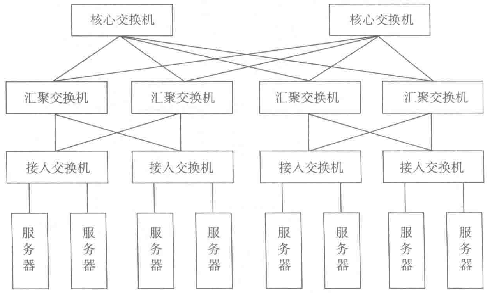

- 汇聚层：用于接入层的互联，并作为该汇聚区域二三层的边界，同时提供基于策略的连接，各种防火墙、负载均衡等业务也部署于此；
- 核心层：用于汇聚层的互联，并实现整个数据中心与外部网络的三层通信，它是网络高速交换的主干。

传统的网络模型在很长一段时间内，支撑了各种类型的数据中心，但传统三层的网络拓扑没有明确的模块化、区域化的理念，设备利用率和能效较低，逐渐成为业务发展的瓶颈。随着以太网技术的发展和云计算大量采用虚拟化技术后，LAN 网络层也有新的架构出现，加上虚拟化 I/O 技术的发展，有助于较好的改善网络节点的延时。低延时的网络是云计算数据中心发展的基本要求，根据这样的要求，越来越多的数据中心采用了 Fabric 类型的网络架构，从而也促使网络架构从传统的三层网络架构减为二层网络架构，而各网络设备之间的连接关系变得更加复杂。
矩阵架构可为任意两个交换机节点提供低延迟和高带宽的通信，可以配合高扩展性的模块化子集设计。
二层网络架构的几种拓扑结构如图 7-5、图 7-6、图 7-7 所示。
后端网络的主要功能是存储，存储网络交换机宜与存储设备贴邻部署，存储网络的连接应尽量减少无源连接点的数量，以保证存储网络低延时、无丢包的性能。
服务器与网络设备或存储设备的距离应由网络应用类型和传输介质决定。
运营网络包括带内管理网络及带外管理网络。带内管理是指管理控制信息与业务数据信息使用同一个网络接口和通道传送，带外管理是指通过独立于业务数据网络之外的专用管理接口和通道对网络设备和服务器设备进行集中化管理。A 级机房应单独部署带外管理网络，服务器带外管理网络和网络设备带外管理网络可使用相同的物理网络。